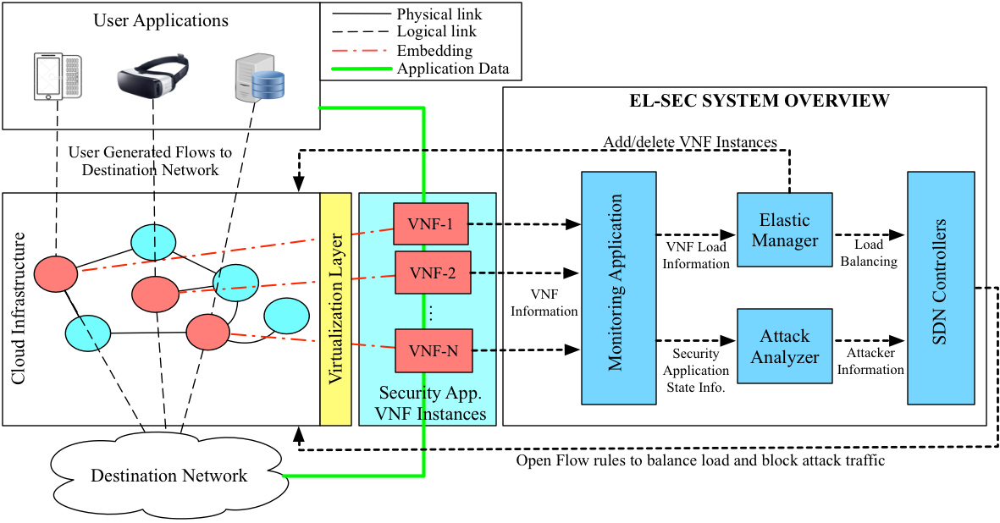

The concept of Virtualized Network Functions (VNFs) aims to move Network Functions (NFs) out of dedicated hardware devices into software that runs on commodity hardware. A single NF consists of multiple VNF instances, usually running on virtual machines in a cloud infrastructure. The elastic management of an NF refers to load management across the VNF instances and the autonomic scaling of the number of VNF instances as load on the NF changes. Here provide EL-SEC, an autonomic framework to elastically manage security NFs on a virtualized infrastructure.
As a use case, we deploy the Snort Intrusion Detection System as the NF on the GENI testbed. Concepts from control theory are used to create an Elastic Manager, which implements various controllers – in this use case, Proportional Integral (PI) and Proportional Integral Derivative (PID) – to direct traffic across the VNF Snort instances by monitoring the current load. RINA (a clean-slate Recursive InterNetwork Architecture) is used to build a distributed application that monitors load and collects Snort alerts, which are processed by the Elastic Manager and an Attack Analyzer, respectively. Software Defined Networking (SDN) is used to steer traffic through the VNF instances, and to block attack traffic. Our results shows that virtualized security NFs can be easily deployed using our EL-SEC framework. With the help of real-time graphs, we show that PI and PID controllers can be used to easily scale the system, which leads to quicker detection of attacks.
|  |
Link to EL-SEC Tutorial
Video for PI controller based Elastic Management
Source code of our GENI implementation is available on GitHub
{kind=link}